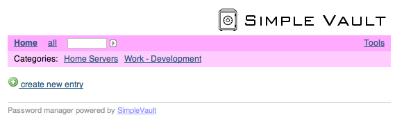
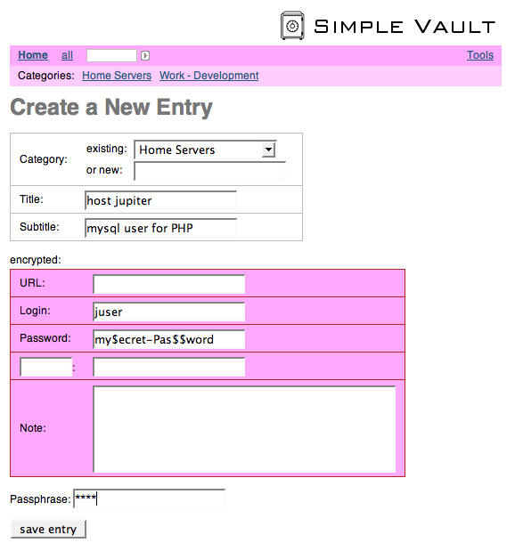
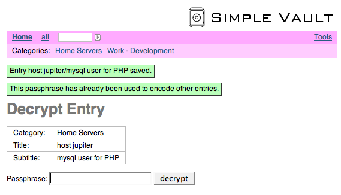
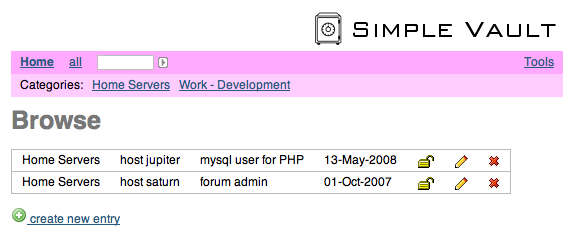
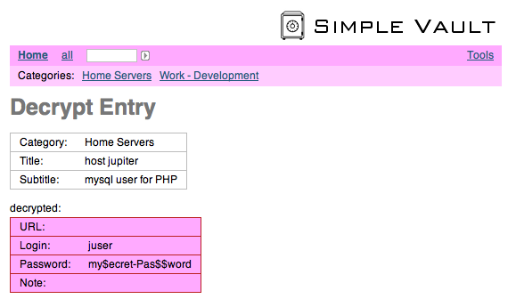
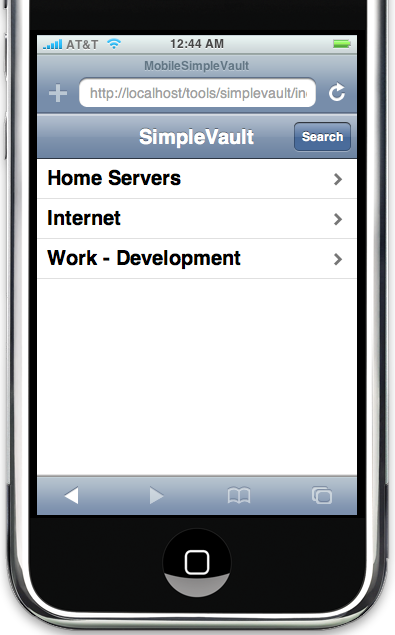
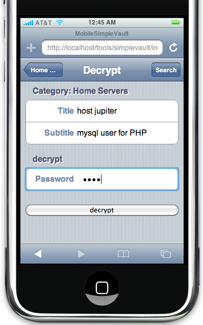
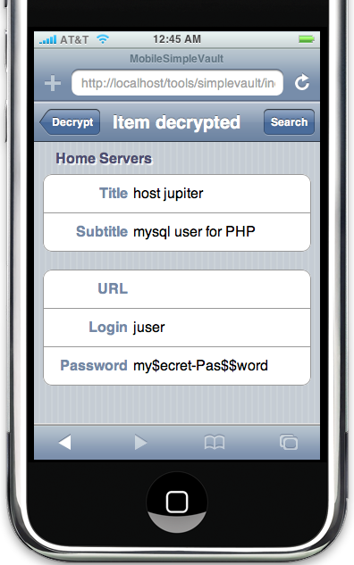

SimpleVault is a web-based tool that allows you to manage passwords or other secret information in a safe way. All secret information is encrypted using strong encryption algorithms. SimpleVault is particularly useful if you need to manage your secret data, or if you want to share secret information within a working group with trusted members. But it can also be used as a common tool for users who don't trust each other.
This project is kindly hosted by sourceforge.net: http://sourceforge.net/projects/simplevault
An online demo is available. (Please don't misuse the demo. The vault is regularly purged.)
SimpleVault can be downloaded and used for free and it's source code is available under the GPLv3 license. I give it away for free mainly because I'm intensively using other open source products and I want to give back something useful to the community.
Prerequisites are: PHP4 or PHP5 with the mcrypt library.
Download and unpack the SimpleVault package to the directory <install-dir>. By default, /var/lib/simplevault/simplevault.txt is used as the vault file where all encrypted and unencrypted data is stored. This file should be readable and writeable by the web server. A different vault file can be configured in svconfig.php in the variable $vaultfname.
That's it. Go to <your-host>/<install-dir>/index.php and start creating entries.
In the default installation, the vault file contains 2 categories and 4 entries for demonstration purposes. All entries are encrypted with the passphrase toto. You can delete the entries interactively, or by emptying the vault file.
If you have problems please ask your questions in the support forum.
In the configuration file svconfig.php (can initially be copied from svconfig.php-dist) there is a configuration section below the lines *** Settings.
Simply replace the files index.php, sv.js, img/* and tpl-* with the new files from the distribution. Check svconfig.php-dist if there are new configuration parameters.


When the item has been created, a short message is displayed. The create dialog doesn't ask you to type in the passphrase twice. Therefore, in order to make sure that you typed in the correct passphrase, it is recommended to decrypt your new item right after it has been created.



If you have questions please ask them in the support forum.
The iPhone interface currently only supports browsing, reading and decrypting items. Editing and creating new items will be added in a future version.
  This software has not been designed by a security specialist! SimpleVault is a best-effort approach with common sense security principles in mind. For example, in all input fields scripting tags are automatically filtered or escaped in order to prevent from cross site scripting attacks. But for a really serious application you may prefer one of the bullet proof commercial applications that are available on the market.
The most important functionality of SimpleVault is to encrypt all secret data that has to be stored. The encription uses strong encryption algorithms, and if a good password is used, it is virtually impossible to decrypt the data without knowing the password. This means that even if the vault file is stolen, the secret data is safe. Actually, the vault file could be made publicly accessible without any risk.
However, during the process of using SimpleVault, the secret data is unencrypted at certain times and locations. The red boxes in the table below indicate unencrypted secret data.
|
|
screen/keyboard |
browser |
network |
web server |
php script |
filesystem |
|
http |
|
|
|
|
|
|
|
https |
|
|
|
|
|
|
One obvious consequence is, that SimpleVault should only be used over the https protocol. And yes, in our case we use SimpleVault only on our local network behind a completely isolating firewall.
These are the known potential security risks with SimpleVault:
All data is stored in one text file - the vault file. As an example you can have a look at the demo vault file of the online demo. And this is the format of the vault file:
Various People have contributed to SimpleVault. Most of them are listed the comments in index.php.
Rolf Brugger, Dec 2011